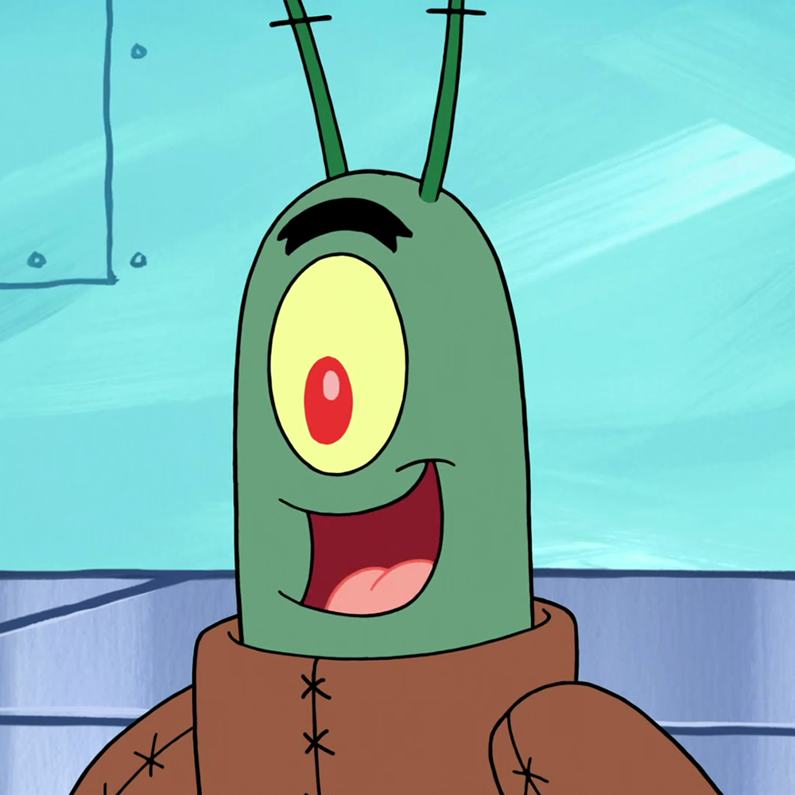
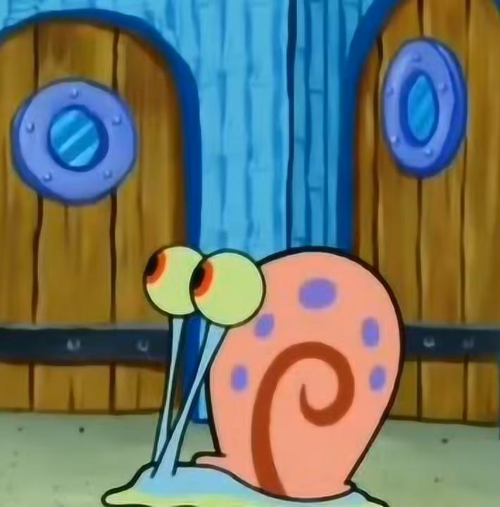

角色介绍

海绵宝宝：黄色长方形海绵，蟹堡王餐厅的高级厨师，乐观开朗、天真善良、充满活力，但有时会因好奇和贪玩惹祸。他喜欢捕捉水母，擅长做蟹黄堡，拥有不死之身，即使身体被破坏也能恢复原状

派大星：粉红色的海星，智商极低，头脑与身体仅使用插头连接。他懒惰、孩子气，喜欢看电视，讨厌洗澡和洗手。他与海绵宝宝是最好的朋友，经常一起玩耍.
-
章鱼哥：大鼻子章鱼，容易愤怒且势利眼，相当自恋，自以为拥有艺术才能。他是光头，但曾有过黄色长卷发。他居住在一栋仿复活节岛人像的房屋。他担任蟹堡王餐厅的柜台人员，但并不喜欢自己的工作，喜欢吹奏竖笛及采用多种风格画自画像。

蟹老板：红色螃蟹，本名蟹阿金。他视金钱如生命，经常为了一块钱而去冒生命危险。他是快餐店蟹堡王餐厅的经营者，多次向员工宣导要有时间观念，因为时间就是金钱。他营业时间常在办公室看报纸、数钱、洗金钱浴等，喜欢看讽刺戏剧，和痞老板是死对头。
- 
痞老板：浮游生物，蟹老板的死对头。他的电脑老婆是凯伦。他经常试图偷取蟹老板的蟹黄堡秘方，但总是以失败告终。

珊迪：松鼠，来自德州。她穿着特殊的潜水服和头盔在水下生存。她是海绵宝宝的好朋友，喜欢和他一起做极限运动，尤其是空手道。
- 
小蜗：海绵宝宝的宠物蜗牛，是一只会“猫~猫~”叫的海蜗牛。它是海绵宝宝的得力助手，经常帮助他解决各种问题.
-
凯伦：痞老板的电脑老婆，是一台超级计算机。她拥有高度的智能和计算能力，能够帮助痞老板策划各种阴谋和计划。